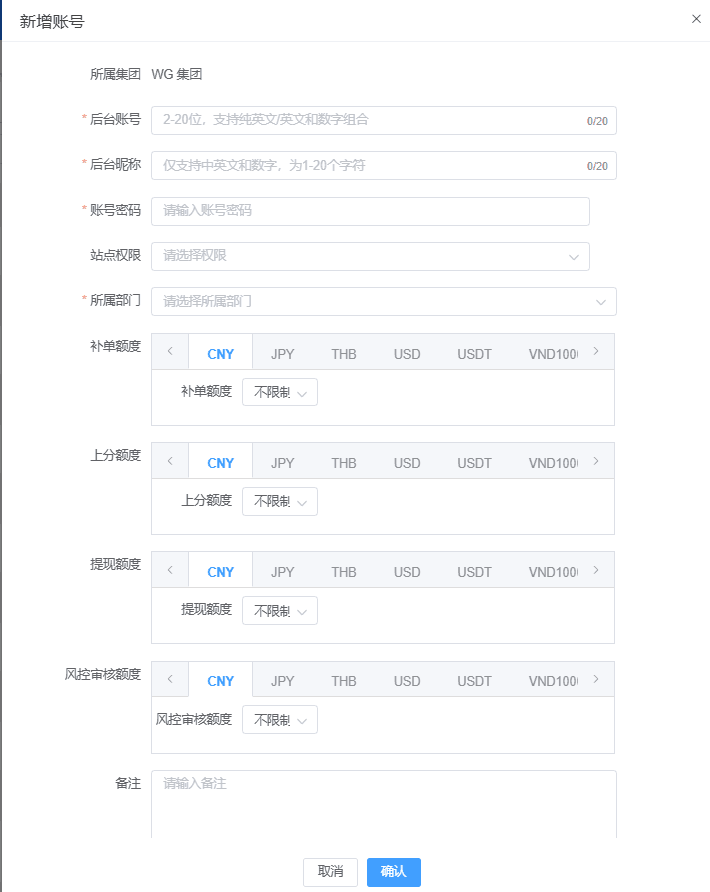
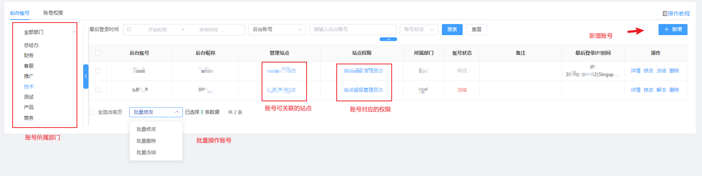
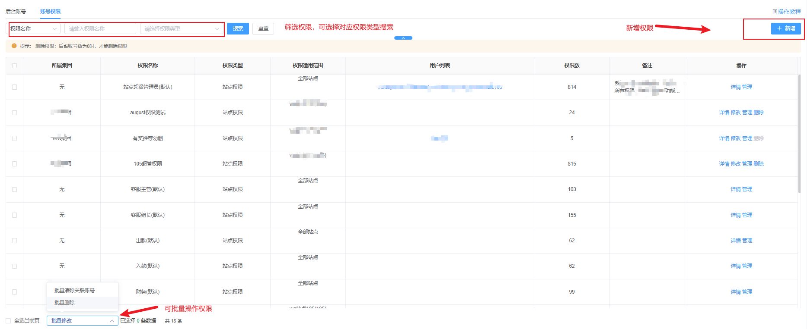
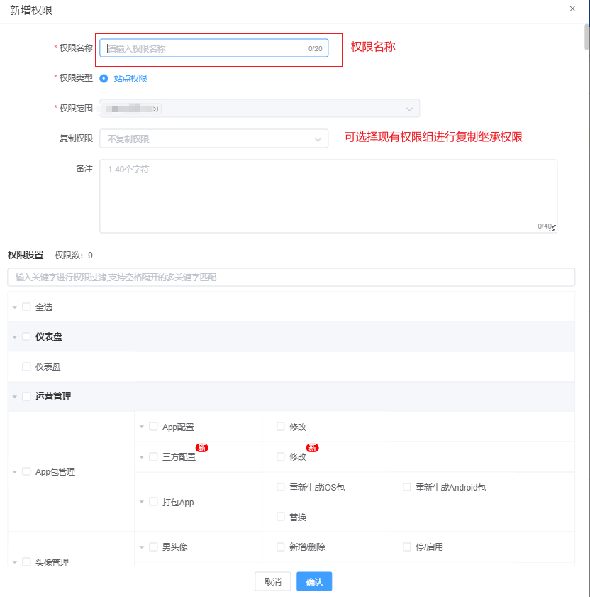
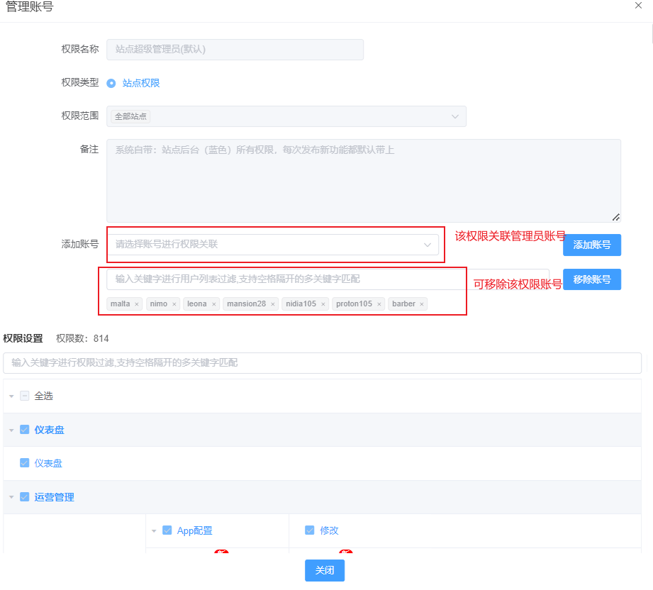
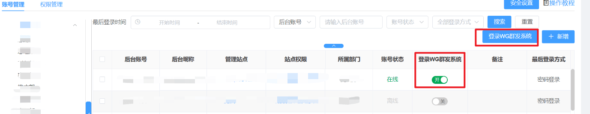

一、后台账号
1、搜索说明：可通过选项或文字搜索出对应账号（支持模糊搜索）根据部门与状态筛选，登陆时间范围查询
2、新增说明：请移至【账号权限】页面进行创建权限后，才进行新增后台账号操作；若已完成账号权限，可参考下图新建后台权限：
3、额度设置说明：按会员币种设置额度
(1)补单额度：后台手动创建充值补单时的额度限制。
涉及充值补单范围：全部充值、转账充值、在线充值、客服代充、人工拉回加款。
额度扣减方式：创建补单就扣补单额度余额。
总额度：该账号一共可以补单的总额度，且不可以重置，如果达到额度只能调整额度 向上调整 例如10000改为100000
每日/每周/每月补单额度: 设置对应条件，补单额度的上限，达到上限无法补单
单笔额度: 单笔最大可以补单的金额，且包含赠送金额。
所有额度设置的上限: 最大可以设置的额度为99999999999
(2)上分额度：后台手动创建充值订单时的额度限制。
申请订单时：先扣除上分额度。
审核通过时：无需处理，申请订单时已扣上分额度。
审核失败时：返回预扣上分额度。
涉及上分范围：转账充值、在线充值、客服代充。
总额度：该账号一共可以上分的总额度，且不可以重置，如果达到额度只能调整额度 向上调整 例如10000改为100000
每日/每周/每月上分额度: 设置对应条件，上分额度的上限，达到上限无法上分
单笔额度: 单笔最大可以补单的金额，且包含赠送金额。
所有额度设置的上限: 最大可以设置的额度为99999999999
(3)提现额度：后台手动创建提现订单、审核出款/重新代付的额度限制
额度扣减方式：创建提现订单就扣提现额度余额。(非人工扣款)
总额度：该账号一共可以提现的总额度，且不可以重置，如果达到额度只能调整额度 向上调整 例如10000改为100000
每日/每周/每月补单额度: 设置对应条件，提现额度的上限，达到上限无法上分
单笔额度: 单笔最大可以提现的金额
所有额度设置的上限: 最大可以设置的额度为99999999999
其他说明：已人工出款操作无需额度
(4)风控审核额度：
a、交互选项与“提现额度“完全一致，所有站点的初始化设置均为“不限制“。
b、额度权限校验：单个或批量风控审核通过时，系统将自动校验额度权限。
c、报错提示：额度不足，系统将弹出错误提示。

4、页面操作说明：可直接修改后台账号/重置密码/冻结/解冻账号和启停谷歌验证码，具体说明如下：

列表调整：对管理员进行编辑对应站点，与对应权限调整
修改后台账号：对管理员进行编辑，修改是允许编辑权限和登录的站点以及备注。在进行编辑时，则站点权限和选择站点则为该登录管理员的权限
重置密码：默认重置的密码为6-12位随机字母+字符+数字组合密码，登录时需要强制修改密码
冻结账号：默认超过系统设定风控值，如登录错误5次，账号被冻结或人工手动冻结，账号冻结后将不能登录
解冻账号：可对已冻结账号进行解冻，恢复正常登录
重置谷歌验证：重置后，需要重新绑定手机才能登录。
二、账号权限
1、搜索说明：可通过选项或文字搜索出对应账号（支持模糊搜索），不同层级后台可根据权限类型筛选

2、新增说明：管理员可以创建同名的权限名称

3、页面操作说明：可直接解除账号/删除/修改和查看权限，具体说明如下：

添加账号：主要是为了快速添加该权限关联的账号
移除账号：主要是为了变更账号的权限组方便删除账号（当只有一个账号权限时，并且角色是自己时，无法进行解除）
删除：后台账号数为0时，才能删除权限，系统默认权限无法进行删除
修改：对该角色权限进行修改
查看权限：即查看该权限的详情
登录WG群发系统
1.使用WG群发系统，必须持有人账号或超级管理员首次跳转至群发系统时，可选择创建公司、加入公司。后续管理员才可以登录WG群发系统
2.非持有人、非超级管理员首次跳转至群发系统时只展示加入公司
3.持有人账号或超级管理员可以给管理员开启登录 WG群发系统权限，开启后才可以登录，不开启无法登录
